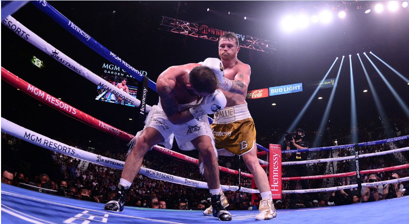
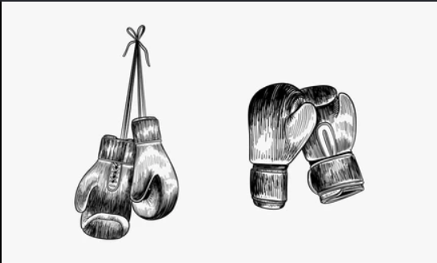

Historia del Boxeo Mexicano

La historia del boxeo mexicano comenzó a consolidarse durante el siglo XX, cuando este deporte empezó a ganar popularidad en diferentes regiones del país. Con el paso de los años, surgieron importantes figuras deportivas que lograron reconocimiento internacional gracias a su talento y disciplina.
Muchos boxeadores mexicanos se destacaron por su estilo ofensivo, resistencia física y valentía dentro del ring. Estas características permitieron que el boxeo mexicano fuera admirado por aficionados y expertos deportivos alrededor del mundo.

Entre los campeones más importantes se encuentran Julio César Chávez, Rubén “Púas” Olivares y Saúl “Canelo” Álvarez, quienes han contribuido al crecimiento y prestigio del boxeo nacional e internacional.
Actualmente, México continúa formando nuevos talentos deportivos que buscan mantener viva la tradición boxística del país y representar con orgullo la cultura deportiva mexicana.